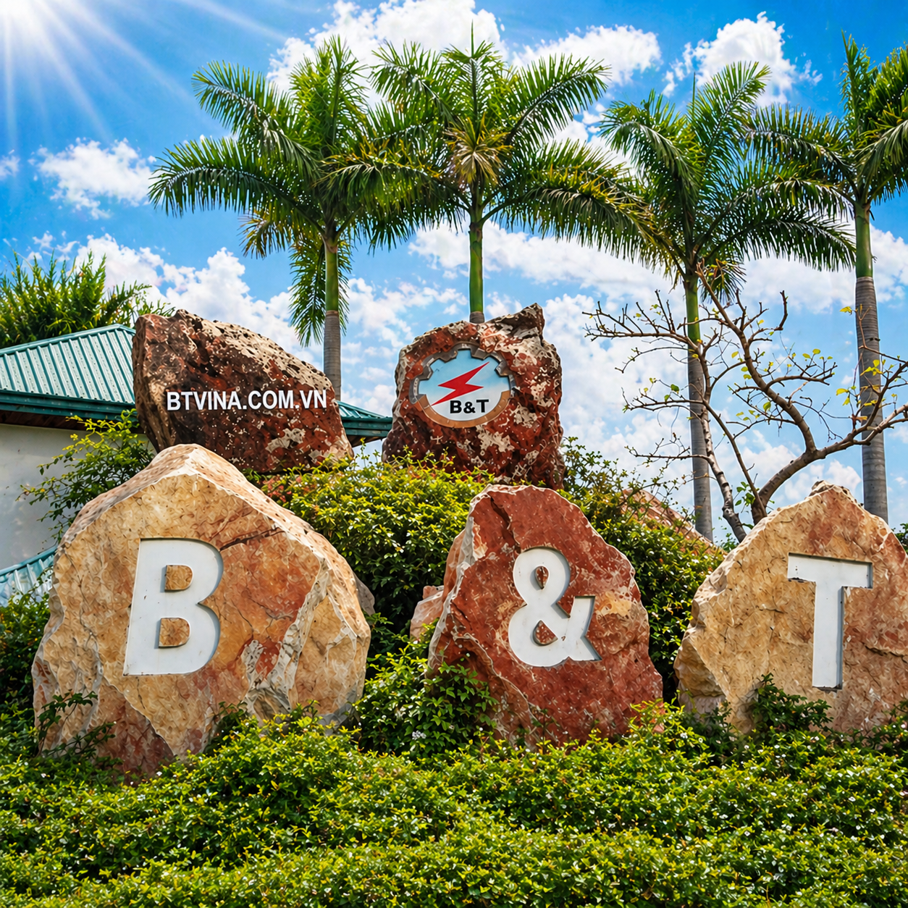
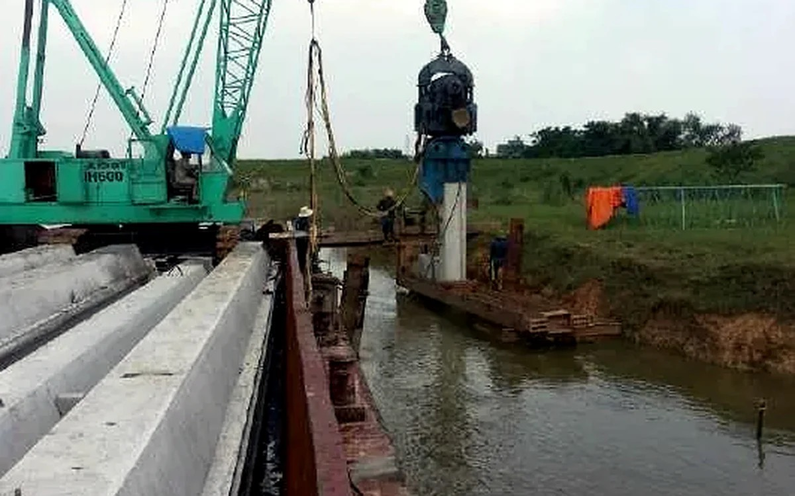
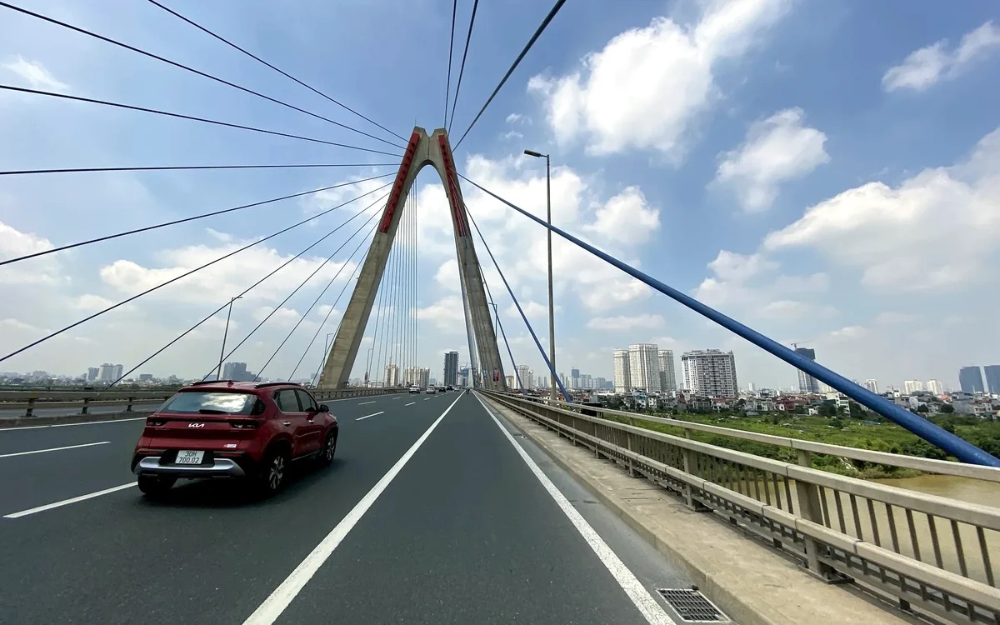
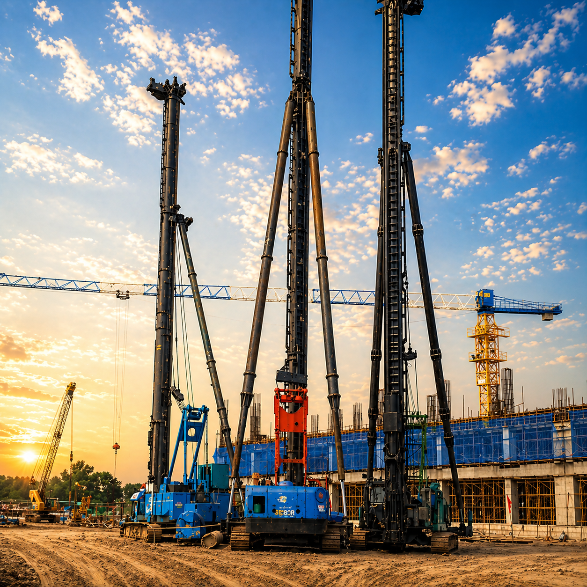

Year operations began

Soft Soil Treatment • Mechanical Fabrication • Construction Equipment
Strong Foundations, Trusted Construction
B&T Co., Ltd. provides soft soil treatment, foundation construction, mechanical fabrication and heavy-duty equipment rental solutions for infrastructure, industrial and civil projects nationwide.
- Experience since 2001
- Specialized construction equipment
- Safety, quality and schedule control
B&T Co., Ltd. established
Charter capital
Personnel, engineers and technicians
Representative projects in the company profile
Fabricated vibro hammer capacity up to 180kW
About B&T
A Trusted Foundation Partner for Infrastructure and Industrial Projects
B&T has grown from a foundation in mechanical fabrication and practical construction experience. With a skilled technical team, specialized equipment and strict quality control, we work alongside investors and contractors on foundation, infrastructure and industrial projects.

Reputation • Quality • Safety
Mastering Ground Conditions, Building the Future
Business Sectors
From Soft Soil Treatment to Integrated Construction Equipment
From solution assessment to site execution, B&T provides foundation, mechanical and equipment services for construction projects.

01
Soft Soil Treatment
Installation of vertical drains, sand wells, sand piles, stone columns and ground improvement solutions matched to project geology.

02
Pile and Foundation Construction
Construction of bored piles, concrete piles, concrete sheet piles, soil cement columns and foundation works.

03
Mechanical Fabrication
Fabrication of vibro hammers, traffic components, molds, gear systems, mechanical parts and custom equipment.

04
Construction Equipment Rental
Supply of cranes, generators, vibro hammers, excavators, wheel loaders, bulldozers and heavy-duty site equipment.

05
Suspension Bridges and Transport Works
Construction and installation of community suspension bridges and transport infrastructure packages.

06
Industrial Construction
Execution of industrial facilities, plants, stations, ports and technical infrastructure works.
Representative Projects
Each Project Marks a Construction Capability Milestone
B&T has participated in infrastructure, transport, industrial and soft soil treatment projects across Vietnam.

2026
Ngu Huyen Khe Canal
Ngu Huyen Khe Canal Bank Landslide Treatment
Construction of prestressed reinforced concrete sheet piles SW450B for emergency canal bank landslide treatment.

2025
Dong Nai
Long Thanh Airport
Construction of D800 soil cement columns for Long Thanh area infrastructure works.

2025
Hanoi
Thuy Phuong Canal Rehabilitation
Construction of prestressed reinforced concrete sheet piles SW500B for emergency works, To Lich River water replenishment and local flood reduction.

2021
North - South
Mai Son - National Highway 45, North - South Expressway
Construction of D400 sand piles for a key expressway section.

2017 - 2021
Hanoi
Yen Nghia Drainage Pumping Station
Construction of SW500, SW600 and SW840 piles for hydraulic infrastructure works.

2014 - 2020
Hai Duong
Hai Duong Thermal Power Plant
Bored piles, crushed stone columns, soil cement columns and conveyor support works.

2014 - 2016
Central Vietnam
Da Nang - Quang Ngai Expressway
Construction of D400 sand piles and pneumatic sand piles.

2014 - 2015
Quang Ninh
Thang Long Thermal Power Plant
PHC pile driving and crushed stone columns for industrial foundation works.

2011 - 2013
Transport Infrastructure
New National Highway 3 Construction Project
Construction of sand piles, vertical drain piles and soft soil treatment works.
Equipment and Mechanical Works
Core Equipment and Mechanical Capability
Mechanical fabrication capability enables B&T to control equipment, optimize construction solutions and meet site schedule requirements.

Mechanical Fabrication
Vibro Hammers 30kW - 180kW
Fabrication, repair and operation of vibro hammers for driving and extracting sheet piles, casing installation and foundation works.

Foundation Works
Crawler Cranes
Lifting equipment, erecting piles, suspending vibro hammers and supporting site construction lines.

Foundation Works
Pile Press Machines
Suitable for works requiring controlled pressing force, noise and vibration.

Foundation Works
Bored Pile Rigs
Serving bored pile works, casing installation and foundations for heavy-load structures.

Equipment Rental
Air Compressors
Providing stable air supply for pneumatic sand pile lines and site support equipment.

Equipment Rental
Excavators, Bulldozers and Generators
Supporting construction capacity, site grading and equipment operation for infrastructure projects.
Implementation Process
Quality, Schedule and Cost Control from Preparation Stage
A clear process helps control quality, schedule and cost from the preparation stage.
Requirement Intake
Clarifying project scale, site conditions and technical objectives.
Site Condition Survey
Assessing site conditions, geology, loads and construction constraints.
Technical Solution Proposal
Selecting foundation methods aligned with schedule and budget.
Construction Execution
Coordinating personnel, equipment and on-site quality control.
Acceptance and Handover
Completing documentation, handover and post-construction support.
B&T Commitments
Quality, Safety, Schedule and Economic Efficiency
Quality
Each completed project is a commitment to reputation and technical capability.
Safety
Site execution follows labor safety principles and field risk control.
Schedule
Proactive equipment and staffing to meet project schedule requirements.
Economic Efficiency
Solutions matched to geological conditions, loads and practical budgets.

Technical and Construction Team
Human Resources Aligned with Site Requirements
B&T has engineers, technical staff, skilled workers and site managers experienced in infrastructure, industrial and soft soil treatment projects.
Solution Consultation
Need a Safe Foundation Solution for Your Project?
Contact B&T for construction method consultation matched to geological conditions, technical requirements, schedule and practical budget.
Contact